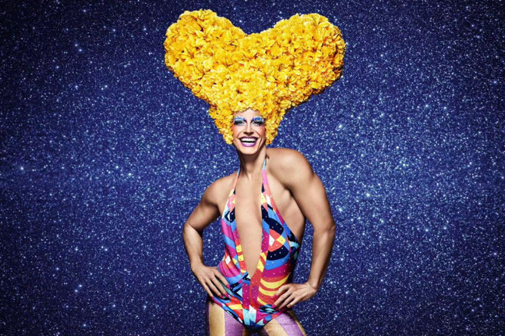

Priscilla, a rainha certinha do deserto.

ALERTA DE GATILHO CULTURAL:
pode ser que muita gente fique incomodada com o que vai ler.
Finalmente, chegamos ao ponto em que a vilania foi expulsa do teatro. É no afã desenfreado de afirmar e reafirmar nossas identidades e histórias, principalmente no sentido da aceitação e da inclusão que, erroneamente, apresentamos a nossa comunidade como infalível e incapaz do deboche, da incorreção e até do preconceito interno (que tanto nos aflige, eu sei!). As nossas histórias não podem ser chapa branca, do mesmo modo que ninguém consegue se sentir representado por personagens certinhas demais. Incorreção é bom e a gente gosta, especialmente no palco e numa comédia. Um exemplo fora de contexto? O que seria de Esqueceram de Mim sem a crueldade diabólica e ao mesmo tempo doce de Kevin? A infância não é um lugar seguro para adultos.
Não é fácil discutir isso, eu sei. Mas não podemos fugir da crítica sobre nós mesmos, a tão fundamental autocrítica que falta, por exemplo, aos movimentos de esquerda. Daí, no desejo de falar com o maior número de pessoas possível, de mudar e quebrar paradigmas históricos de abuso, passamos com um rolo compressor sobre as nossas diferenças e sutilezas, colocando a nossa tão amada diversidade dentro de um saco pintado de arco-íris com lantejoulas. Como se a vida fosse o programa da Xuxa. Ora, se fosse fácil, não se chamaria “luta”, chamaria “férias de verão”. É uma sinuca de bico, eu sei, mas precisamos pensar nela. Cada bola encaçapada nessa sinuca tem valor e conta pontos.
Em minha coluna da semana passada (se você não leu, leia), falei sobre a construção desse negócio chamado cultura queer. De como esses conteúdos nascem, para onde eles vão, como eles nos representam e como vão sendo alterados pelo tempo e pelo mundo afora. Como diria Chico Buarque de Hollanda: “nem assaz alhures e antanho”, nossa luta apenas engatinhava. Priscilla foi um conteúdo cinematográfico produzido do outro lado do mundo, no meio do deserto, apenas trinta anos atrás. Digo apenas porque, diante de qualquer luta histórica, 30 anos é nada! Especialmente porque no Brasil temos lutas muito mais antigas: a dos negros tem mais de 400 anos, o feminismo no País desponta ha mais de 150 anos, as lutas republicanas e democráticas enfrentam mais de 200 anos. Todas essas lutas se sobrepõem. Aprendamos com elas.
Por isso, acredito que todo herói – especialmente na ficção – precisa ser humanizado, passível de erro, controverso, capaz de revelar toda sua humanidade e, inclusive, vilania. E não importa a narrativa. Também nas palavras de Nelson Rodrigues: “a vida não é bombom com licor“. Tudo isso colocado. Se você chegou até aqui, imagino que ou está me odiando ou está concordando. A vida atualmente carece de bons interlocutores. Sejamos, pois!
Tenho a impressão de que a presente montagem de Priscilla, em cartaz em São Paulo, sofreu uma “arcoirização” brutal. Parece um ringue no qual um embate acontece em cena. De um lado do palco aquela pobre (ou terrível) gente cinza e bege; do outro lado, aquela gente supergalera, divina e maravilhosa, que veste as cores do arco-íris 24 horas por dia. Definitivamente, o mundo não é assim. Muito menos a nossa comunidade. Vai nisso já um erro crasso de comunicação: uma ideia de que somos nós contra eles!
Você vai me dizer: ‘poxa, mas é entretenimento; precisa levar tudo tão a sério?!’ E eu vou responder: é comunicação e expressão e precisamos tomar cuidado com as mensagens subliminares. Se você não tinha pensado sobre isso, pense agora.
De cara, vou tirar o elefante da sala. Reynaldo Gianecchini está bem no papel. Definitivamente, ele funciona melhor vestido de homem do que de mulher. Está sempre desconfortável dentro de um vestido ou debaixo de uma peruca de EVA —
e não usa salto. Mas isso não importa. A personagem (Tick) é o que a minha mãe chamaria de “o chato da aldeia”, uma espécie de grilo falante que fica o tempo todo dividido entre os dois pólos em conflito, Bernardette e Felicia. Gianecchini é um ator com recursos e, como tal, canta e dança o que é possível dentro de sua história e trajetória pessoal. Possui fragilidades e, talvez, o teatro musical não seja seu melhor veículo por ora. Mas tem enorme carisma, humildade, gentileza com os colegas cena e, tenho certeza, deve aprender muito a cada sessão.
Pessoalmente, preciso dizer que gosto da construção que Terence Stamp deu para a personagem de Bernardette. E sei que você vai dizer neste exato momento: ‘mas, Gerson, ele não era uma pessoa trans, não tinha lugar de fala.’ Claro que eu sei disso! E por isso acho tão importante a escalação de alternância entre as atrizes Wallie Ruy e Verónica Valenttino. Por enquanto, infelizmente, assisti o espetáculo apenas com Verónica e posso dizer que se trata de uma atriz com excelente timing de comédia e com um timbre vocal que lhe permite extensão para aspectos mais profundos da atuação. Sua construção/composição, até mesmo por imposições do texto, transita para um lugar mais leve e divertido. A curva estabelecida para a personagem é muito rica e interessante, indo de uma possível caricatura (que se mostra apenas como artifício de humor) na primeira aparição para alcançar uma performance esférica (e aí sim, plena de verdade) com a completa expressão do feminino. Além disso, acerta todas as piadas.
O molho da história, aquele que faz com que entremos em contato com o nosso diabinho interior, é Adam/Felicia. A preocupação do elenco e produção com uma certa ‘higienização’ do roteiro do filme e da encenação de 2016, tornou a personagem mais certinha e, consequentemente, mais tola. Seu intérprete, Diego Martins, tira um caldo saborosíssimo do que sobrou pra ele. Pegou o limão e fez a melhor margarita possível. Estabelece comunicação imediata com o público, acerta todas as piadas físicas e expressões faciais (mesmo tendo que lidar com o entrave da maquiagem postiça sobre os olhos que atrapalha o ‘bate-cabelo’ da primeira entrada), além de se sair bem na curva da personagem no segundo ato.
Esse é o trio central. Mas, felizmente, teatro musical não se faz só com protagonistas. E gosto sempre de lembrar a máxima de Neyde Veneziano: “drag-queens são as legítimas herdeiras das nossas vedetes”. Assim, neste quesito, o elenco é coeso, vivo e abundante de talento no canto, na dança e na representação. Uns cobrem os outros como deve ser para dar a perfeita ilusão de que todos fazem tudo muito bem. Veja que eu usei a palavra ilusão. Assim que é, assim que deve ser.
Sinto falta de preparadores de elenco para o texto e para o gesto. Acaba sempre sobrando para coreógrafos. Nesse aspecto, é sempre uma alegria ver o trabalho de Mariana Barros aplicando todo seu conhecimento técnico em prol de um resultado a serviço da obra. Suas coreografias levam em consideração os diferentes corpos em cena (de boys-magia até ursinhos carinhosos), trazem referências que partem das pistas de dança da Nova Iorque dos anos 1970-80, passam pelos ballrooms da clandestinidade, chegando até a popularização do voguing feita na contemporaneidade por shows de TV. Tudo está ali, feito com precisão, mas também com a devida liberdade para parecer natural, vivo.
O trio de Divas é coeso, mas possui pequenas questões de timbragem que eu compreendo mais como sendo de ordem técnica que artística: equalização de microfones, retorno de palco e público, trocas de roupas versus microfonagem, regência, ataque de banda. Como as canções não são diegéticas e estão todas em inglês (um problema sem possibilidade de resolução, uma vez que o público vai lá para ouvi-las no seu original como em qualquer boa Jukebox), essa questão não chega a ser um problema. As três interagem bem com a dramaturgia, tirando boas risadas do público a cada pequena interferência.
Num espetáculo que possui acentuada voz épica, o jovem performer Luan Carvalho é, em minha opinião, uma grande revelação. Canta bem, dança bem e é um excelente entertainer, com direito a número de plateia no aquecimento para o segundo ato. Sobre isso: o espetáculo, para irritação dos pontuais, começou atrasado e poderia ter mais agilidade, resultando longo. Mas… Precisamos vender pipoca no intervalo! Mas… O público chega sempre atrasado! Mas…
Finalmente, ainda falando de elenco, é sempre um prazer ver o talento e a classe, a criatividade e o bom humor de Andrezza Massei — tirando leite de pedra, no melhor sentido. Sinto que ela sempre merece mais e resulta subaproveitada.
Ainda preciso dizer que o libreto está reformulado com deficiências de verossimilhança temporal – refiro-me às idades propostas para personagens e suas trajetórias no tempo narrativo. Quando a obra se passa? Nos anos 90? Ainda assim, qual a idade de Bernadette e Bob? Ele foi ao Vietnam??? É preciso pensar sobre isso antes de se rejuvenescer elencos deliberadamente. Cheira a etarismo.
No mais — produção, luz, cenário, figurinos, perucas, objetos — tudo está no seu lugar, bem feito, como deve ser quando se tem tanto dinheiro. Sempre acho que fazer bem e acertar em cheio na produção é uma obrigação de quem capta dinheiro público. Portanto, se fizeram bem, não fizeram mais do que obrigação.
Para terminar, recomendo que antes de ir você veja o filme. Cultura, como disse na minha última coluna (se você não viu, veja), é uma coisa que a gente constrói todos juntos, fazendo e consumindo. Se você é uma pessoa da comunidade LGBTQ, tem obrigação de ver o filme. Depois de ver, vá ao teatro e divirta-se!